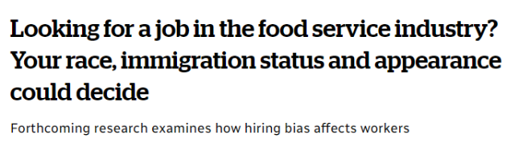

谈到求职，Siham Hagi Hussein说她很幸运自己出生在加拿大，说话没有明显的口音。但她认为她的名字有时可能会产生影响......
“仅仅因为我的名字不常见，招聘经理就会不聘用我，”这名里贾纳大学的研究生说道。
作为一名前服务业的员工，Hussein说，当她找工作时，经常亲自去递交简历，这样招聘人员就可以“更多地了解她，而不是仅仅根据名字来判断她是否讨人喜欢或是否能被录用。”
Hussein的直觉可能是对的，一项即将发表的研究发现，许多经理都存在招聘偏见。应聘者的种族、原籍国、移民身份、性别和外貌都是决定因素.......
这份针对《经济与劳工关系》的研究发现，许多招聘经理已经对理想员工有了固定的想法。
图源：拍摄
该研究基于2021年至2022年期间对企业主、就业机构代表、工会代表、招聘经理和曾在萨省和安省担任食品服务工作者的人们进行了92次采访。
Hussein以研究助理的身份参与了这项调查。
“在对人们进行采访后，很明显，我的这些经历并不罕见，它们似乎是所有在食品服务行业工作的有色人种的普遍经历。”她说。
Ishema Mwunvaneza曾在里贾纳的五家不同酒吧担任调酒师和服务员长达8年时间，他表示自己非常了解这种情况。
他说，他从未参加过面试，而是通过“口口相传”获得聘用。
“现实是不会说谎的......前台是白人、厨房是棕色人种，周末是黑人当保镖。”他说。
Mwunvaneza表示，即便是在一些先进的工作场所，也会出现类似的模式。“在我做调酒师的八年里，只见过一名非裔前台。”
他说，当他指出这些不平等现象时，招聘经理就会“有点被激怒”——而在连锁餐厅和酒吧，情况可能更糟，种族主义非常明显。
“刻板印象和偏见”
安德鲁·史蒂文斯是里贾纳大学工商管理学院的副教授，他跟安省麦克马斯特大学组织行为学商业研究教授凯瑟琳·康奈利共同撰写了这份研究报告。
他说，他亲眼目睹了学生中招聘偏见的影响。他说，许多名字“听起来不像白人”的学生“经常被拒绝进入初级职位”。
“我们注意到，拥有同等资质的原住民申请人与白人申请人收到回电的次数存在很大差异......其中很多是刻板印象和偏见。”他说道。
图源：拍摄
史蒂文斯表示，在就业方面，女性在获得工作机会方面更胜一筹，但优势可能就此止步。“她们在餐饮业中的比例过高，但具有讽刺意味的是，她们的薪水也较低。”
“这些不仅关乎于外在形式的歧视和种族主义，还关乎脑子里关于谁更有能力、谁更能勤奋工作，以及谁可能表现不佳等刻板印象。”
他说，从政策方面来看，临时外国工人的申请并没有得到认真对待，“有很多人被忽视，仅仅因为我们对特定候选人的假设......”
谈到求职，Siham Hagi Hussein说她很幸运自己出生在加拿大，说话没有明显的口音。但她认为她的名字有时可能会产生影响……

“仅仅因为我的名字不常见，招聘经理就会不聘用我，”这名里贾纳大学的研究生说道。
作为一名前服务业的员工，Hussein说，当她找工作时，经常亲自去递交简历，这样招聘人员就可以“更多地了解她，而不是仅仅根据名字来判断她是否讨人喜欢或是否能被录用。”
Hussein的直觉可能是对的，一项即将发表的研究发现，许多经理都存在招聘偏见。应聘者的种族、原籍国、移民身份、性别和外貌都是决定因素…….
这份针对《经济与劳工关系》的研究发现，许多招聘经理已经对理想员工有了固定的想法。
图源：拍摄
该研究基于2021年至2022年期间对企业主、就业机构代表、工会代表、招聘经理和曾在萨省和安省担任食品服务工作者的人们进行了92次采访。
Hussein以研究助理的身份参与了这项调查。
“在对人们进行采访后，很明显，我的这些经历并不罕见，它们似乎是所有在食品服务行业工作的有色人种的普遍经历。”她说。
Ishema Mwunvaneza曾在里贾纳的五家不同酒吧担任调酒师和服务员长达8年时间，他表示自己非常了解这种情况。
他说，他从未参加过面试，而是通过“口口相传”获得聘用。
“现实是不会说谎的……前台是白人、厨房是棕色人种，周末是黑人当保镖。”他说。
Mwunvaneza表示，即便是在一些先进的工作场所，也会出现类似的模式。“在我做调酒师的八年里，只见过一名非裔前台。”
他说，当他指出这些不平等现象时，招聘经理就会“有点被激怒”——而在连锁餐厅和酒吧，情况可能更糟，种族主义非常明显。
“刻板印象和偏见”
安德鲁·史蒂文斯是里贾纳大学工商管理学院的副教授，他跟安省麦克马斯特大学组织行为学商业研究教授凯瑟琳·康奈利共同撰写了这份研究报告。
他说，他亲眼目睹了学生中招聘偏见的影响。他说，许多名字“听起来不像白人”的学生“经常被拒绝进入初级职位”。
“我们注意到，拥有同等资质的原住民申请人与白人申请人收到回电的次数存在很大差异……其中很多是刻板印象和偏见。”他说道。
图源：拍摄
史蒂文斯表示，在就业方面，女性在获得工作机会方面更胜一筹，但优势可能就此止步。“她们在餐饮业中的比例过高，但具有讽刺意味的是，她们的薪水也较低。”
“这些不仅关乎于外在形式的歧视和种族主义，还关乎脑子里关于谁更有能力、谁更能勤奋工作，以及谁可能表现不佳等刻板印象。”
他说，从政策方面来看，临时外国工人的申请并没有得到认真对待，“有很多人被忽视，仅仅因为我们对特定候选人的假设……”